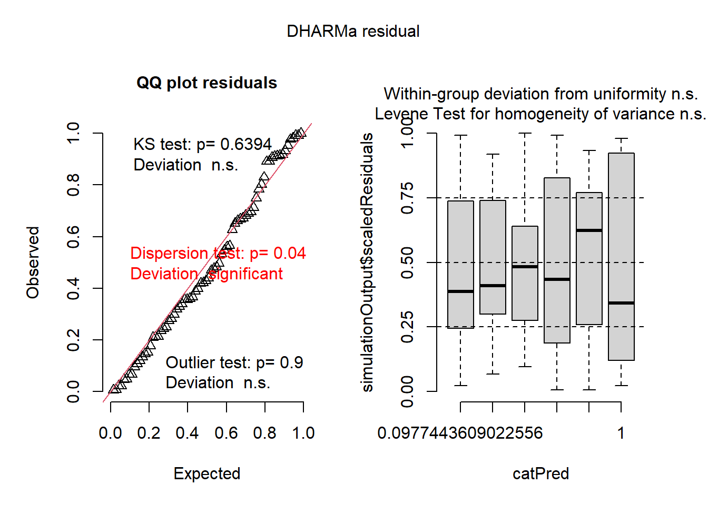

# A tibble: 72 × 2
spray count
<fct> <dbl>
1 A 10
2 A 7
3 A 20
4 A 14
5 A 14
6 A 12
7 A 10
8 A 23
9 A 17
10 A 20
# ℹ 62 more rowsTeste Não Paramétrico
Os testes não paramétricos são métodos estatísticos que não exigem que os dados sigam uma distribuição específica, como a normal. Por isso, são úteis quando as suposições dos testes paramétricos não são atendidas. Eles trabalham com dados em forma de postos (ordens) ou categorias e são ideais para amostras pequenas, dados assimétricos ou com outliers.
Exemplo: conjunto InsectSprays: efeito de inseticida na mortalidade de insetos. Dados no pacote datasets do R.
Carregando o conjunto de dados
Análise visual dos dados
Teste - Modelo ANOVA
Quando se analisa um conjunto de dados e esses dados apresentam-se como não paramétricos, deve-se trabalhar esses dados de uma forma diferente. Mas antes, deve-se comprovar por meio da anova e da checagem das premissas, que os dados realmente não são normais e homogêneos.
Df Sum Sq Mean Sq F value Pr(>F)
spray 5 2669 533.8 34.7 <2e-16 ***
Residuals 66 1015 15.4
---
Signif. codes: 0 '***' 0.001 '**' 0.01 '*' 0.05 '.' 0.1 ' ' 1Checagem das premissas
Warning: Non-normality of residuals detected (p = 0.022).Warning: Heteroscedasticity (non-constant error variance) detected (p < .001).A partir da checagem das premissas, observa-se que os dados não são normais e homogeneos.
Alternativas para dados não paramétricos
Quando se tem dados não paramétricos, tem-se 3 alternativas:
Transformar os dados (Exemplo: raiz quadrada, log, Box cox);
Usar testes não paramétricos (Kruskal-Wallis);
Ou usar modelos lineares generalizados.
1. Transformar os dados para normalizar
Exemplo: Usando a raiz quadrada para tentar normalizar e tornar os dados normais e homogenos.
Pode-se também tentar o log da variável resposta + 0.5.
Df Sum Sq Mean Sq F value Pr(>F)
spray 5 88.44 17.688 44.8 <2e-16 ***
Residuals 66 26.06 0.395
---
Signif. codes: 0 '***' 0.001 '**' 0.01 '*' 0.05 '.' 0.1 ' ' 1Checagem das premissas
2. Uso de testes não paramétricos
Se com as transformações não normalizar e ainda forem heterogêneos, usa-se testes não paramétricos.
Uma das saídas para normalizar os dados é a utilização do teste de Kruskal-Wallis. O teste de Kruskal-Wallis utiliza os valores numéricos transformados em postos e agrupados num só conjunto de dados, é testado se as amostras vêm de uma mesma população, ou se pelo menos uma delas vêm de população distinta das demais. O teste de Kruskal-Wallis dispensa a pressuposição de normalidade e homocedasticidade. Tem 2 opções de teste Kruskal. Para usar essa opção, é necessário baixar e carregar o pacote agricolae.
Teste de Kruskal-Wallis
É utilizado em situações onde queremos comparar mais de dois grupos independentes, de tamanhos iguais ou não, com variável resposta quantitativa. É uma alternativa quando os pressupostos necesários para o teste F da Anova não são atendidos, pois este teste dispensa a pressuposição de normalidade e homocedasticidade.
Kruskal-Wallis rank sum test
data: count by spray
Kruskal-Wallis chi-squared = 54.691, df = 5, p-value = 1.511e-10
Study: insects$count ~ insects$spray
Kruskal-Wallis test's
Ties or no Ties
Critical Value: 54.69134
Degrees of freedom: 5
Pvalue Chisq : 1.510845e-10
insects$spray, means of the ranks
insects.count r
A 52.16667 12
B 54.83333 12
C 11.45833 12
D 25.58333 12
E 19.33333 12
F 55.62500 12
Post Hoc Analysis
t-Student: 1.996564
Alpha : 0.05
Minimum Significant Difference: 8.462804
Treatments with the same letter are not significantly different.
insects$count groups
F 55.62500 a
B 54.83333 a
A 52.16667 a
D 25.58333 b
E 19.33333 bc
C 11.45833 cO pacote emmeans é muito útil na análise de Modelos Lineares Generalizados (GLM), pois permite obter as médias marginais estimadas dos fatores no modelo.
Df Sum Sq Mean Sq F value Pr(>F)
spray 5 2669 533.8 34.7 <2e-16 ***
Residuals 66 1015 15.4
---
Signif. codes: 0 '***' 0.001 '**' 0.01 '*' 0.05 '.' 0.1 ' ' 1Checagem das premissas
Warning: Heteroscedasticity (non-constant error variance) detected (p < .001).Função emmeans: tirar a média da variável inseticida. Para dar o valor original da média e não o valor transformado, usa-se a função type = response.
spray emmean SE df lower.CL upper.CL
A 14.50 1.13 66 12.240 16.76
B 15.33 1.13 66 13.073 17.59
C 2.08 1.13 66 -0.177 4.34
D 4.92 1.13 66 2.656 7.18
E 3.50 1.13 66 1.240 5.76
F 16.67 1.13 66 14.406 18.93
Confidence level used: 0.95 A função pwpm gera uma tabela de comparação das médias e cld é uma função que serve para gerar os números que diferenciam os grupos de médias.
A B C D E F
A [14.50] 0.9952 <.0001 <.0001 <.0001 0.7542
B -0.833 [15.33] <.0001 <.0001 <.0001 0.9603
C 12.417 13.250 [ 2.08] 0.4921 0.9489 <.0001
D 9.583 10.417 -2.833 [ 4.92] 0.9489 <.0001
E 11.000 11.833 -1.417 1.417 [ 3.50] <.0001
F -2.167 -1.333 -14.583 -11.750 -13.167 [16.67]
Row and column labels: spray
Upper triangle: P values adjust = "tukey"
Diagonal: [Estimates] (emmean) type = "response"
Lower triangle: Comparisons (estimate) earlier vs. laterCode
spray emmean SE df lower.CL upper.CL .group
C 2.08 1.13 66 -0.177 4.34 1
E 3.50 1.13 66 1.240 5.76 1
D 4.92 1.13 66 2.656 7.18 1
A 14.50 1.13 66 12.240 16.76 2
B 15.33 1.13 66 13.073 17.59 2
F 16.67 1.13 66 14.406 18.93 2
Confidence level used: 0.95
P value adjustment: tukey method for comparing a family of 6 estimates
significance level used: alpha = 0.05
NOTE: If two or more means share the same grouping symbol,
then we cannot show them to be different.
But we also did not show them to be the same. 3. GLM – Modelos Lineares Generalizados
A função glm é utilizada para ajustar Modelos Lineares Generalizados no R. Esses modelos permitem trabalhar com diferentes distribuições de erro, como binomial, Poisson e outras, tornando possível a análise de variáveis resposta que não seguem uma distribuição normal. O modelo é definido por uma fórmula simbólica que relaciona a variável resposta aos preditores, e pela escolha de uma família de distribuição que representa o tipo de dado analisado. Para publicação de artigos, essa é a opção mais aconselhável.
Para a geração de modelos, a função a ser utilizada é a glm e precisa indicar os argumentos family = poisson(link = “identity”). Para visualizar, pode usar o pacote Dharma e gerar um plot.
Code

Call:
glm(formula = count ~ spray, family = poisson(link = "identity"),
data = insects)
Coefficients:
Estimate Std. Error z value Pr(>|z|)
(Intercept) 14.5000 1.0992 13.191 < 2e-16 ***
sprayB 0.8333 1.5767 0.529 0.597
sprayC -12.4167 1.1756 -10.562 < 2e-16 ***
sprayD -9.5833 1.2720 -7.534 4.92e-14 ***
sprayE -11.0000 1.2247 -8.981 < 2e-16 ***
sprayF 2.1667 1.6116 1.344 0.179
---
Signif. codes: 0 '***' 0.001 '**' 0.01 '*' 0.05 '.' 0.1 ' ' 1
(Dispersion parameter for poisson family taken to be 1)
Null deviance: 409.041 on 71 degrees of freedom
Residual deviance: 98.329 on 66 degrees of freedom
AIC: 376.59
Number of Fisher Scoring iterations: 3 spray emmean SE df asymp.LCL asymp.UCL .group
C 2.08 0.417 Inf 1.27 2.90 1
E 3.50 0.540 Inf 2.44 4.56 12
D 4.92 0.640 Inf 3.66 6.17 2
A 14.50 1.100 Inf 12.35 16.65 3
B 15.33 1.130 Inf 13.12 17.55 3
F 16.67 1.180 Inf 14.36 18.98 3
Confidence level used: 0.95
P value adjustment: tukey method for comparing a family of 6 estimates
significance level used: alpha = 0.05
NOTE: If two or more means share the same grouping symbol,
then we cannot show them to be different.
But we also did not show them to be the same.